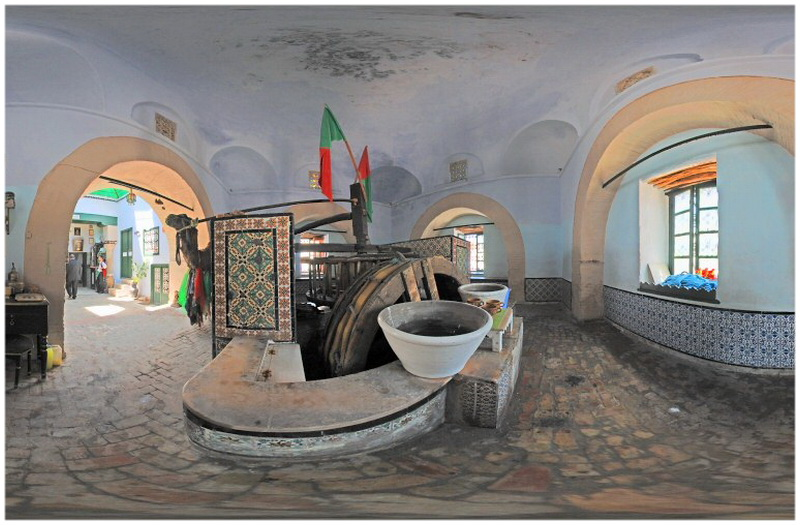
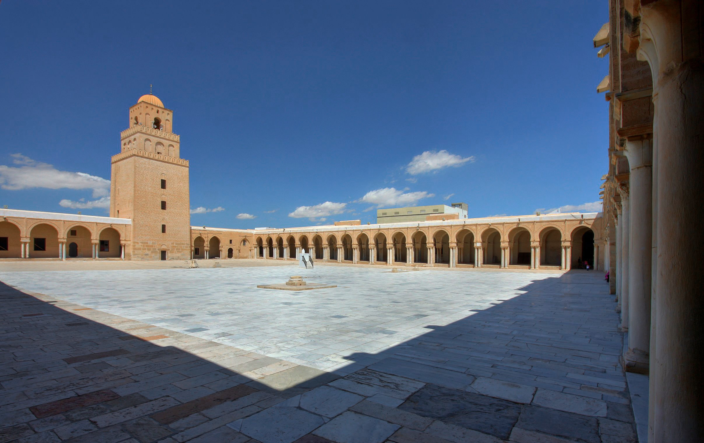

Oldest Islamic Settlement
Kairouan is defined as the holiest city of Tunisia, being the oldest Islamic settlement, having the oldest mosque in North Africa, and the world’s oldest minaret.
Legend has it that the general of the invading Arab forces, Oqba bin Nafi, found a golden cup in the sands of Kairouan. This cup was the same one he had lost in the holy well of Zamzam in Mecca a few years earlier. When he picked up the cup, water sprang from the ground, creating the source of Bi' Barouta, Kairouan's most popular attraction among Muslims.
The Great Mosque of Kairouan dates back to 670 CE and was built by the command of Arab Muslim general Oqba bin Nafi. Although it has been destroyed and rebuilt, today's structure rests much upon the original mosque.
